꽃길숲 둘러보기
사계절 꽃길숲과 추모목을 사진으로 먼저 만나보세요.
추모목 숲 사진
꽃길숲은 대원사 역대 스님들의 부도를 모셔 온 성스러운 터에, 고인의 명패를 추모목에 걸어 포근하게 모시는 수목장림입니다.
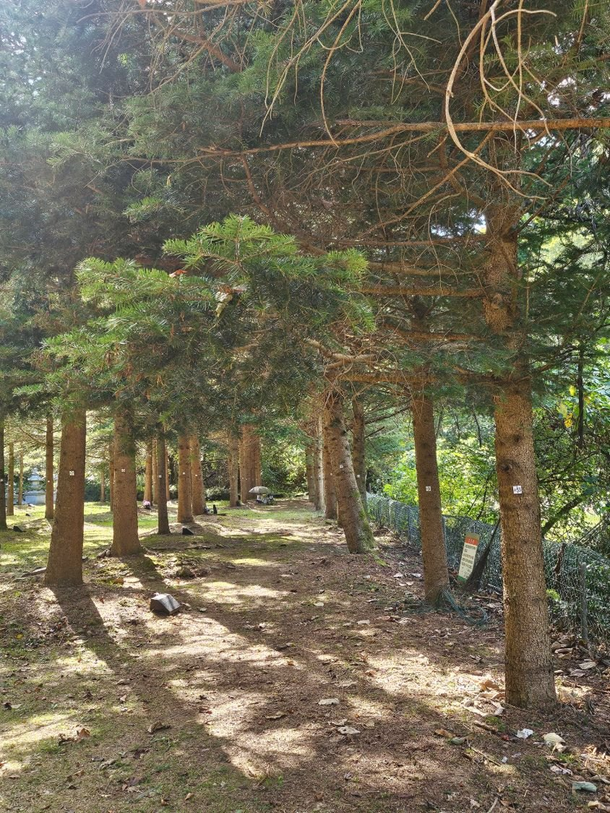
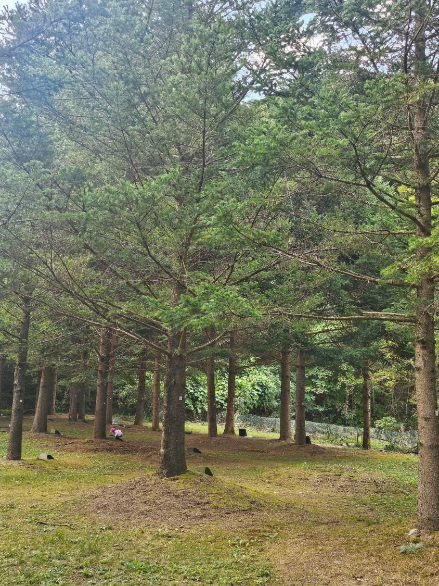
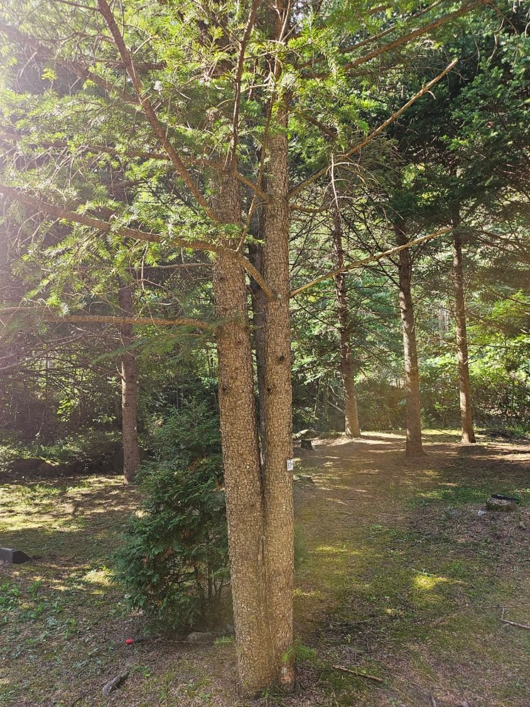
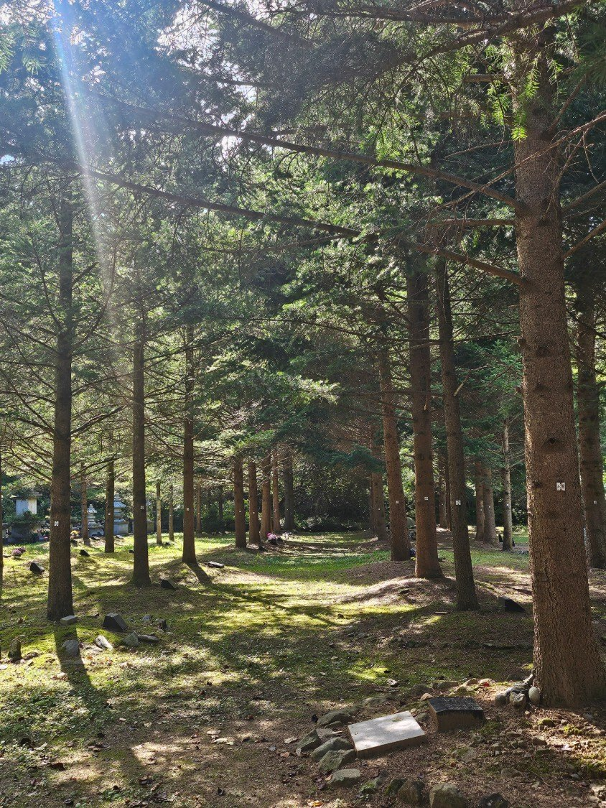
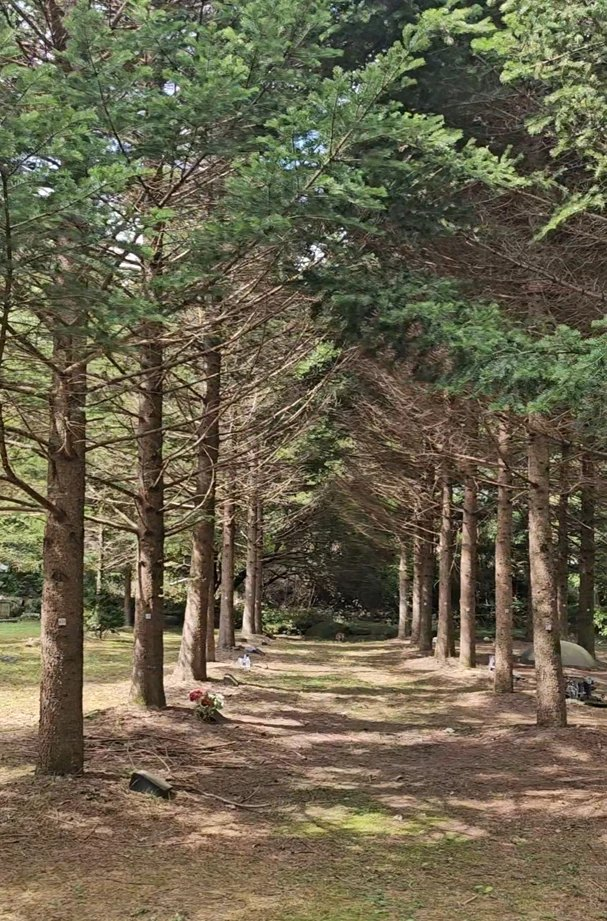
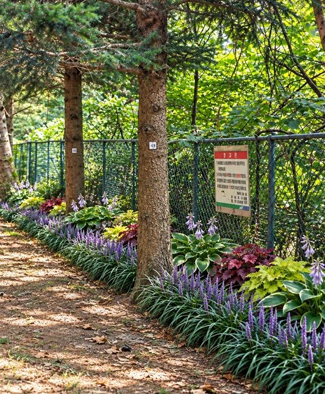
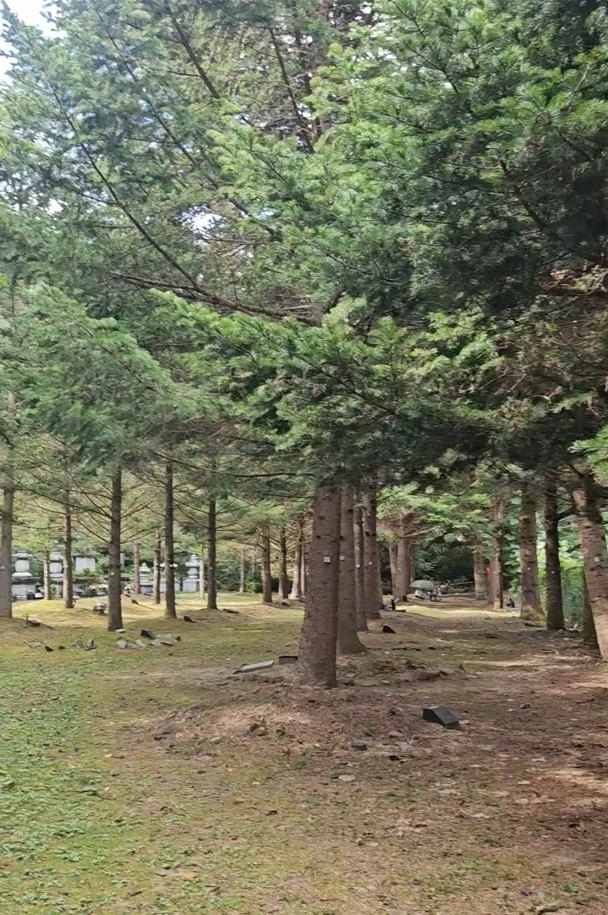
천년고찰 대원사 경내
꽃길숲 수목장을 운영하는 대원사의 모습입니다.
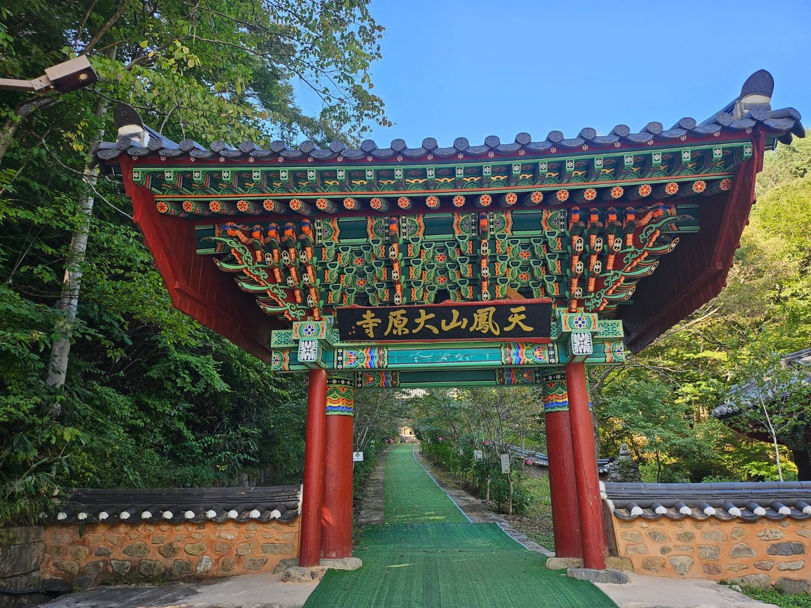

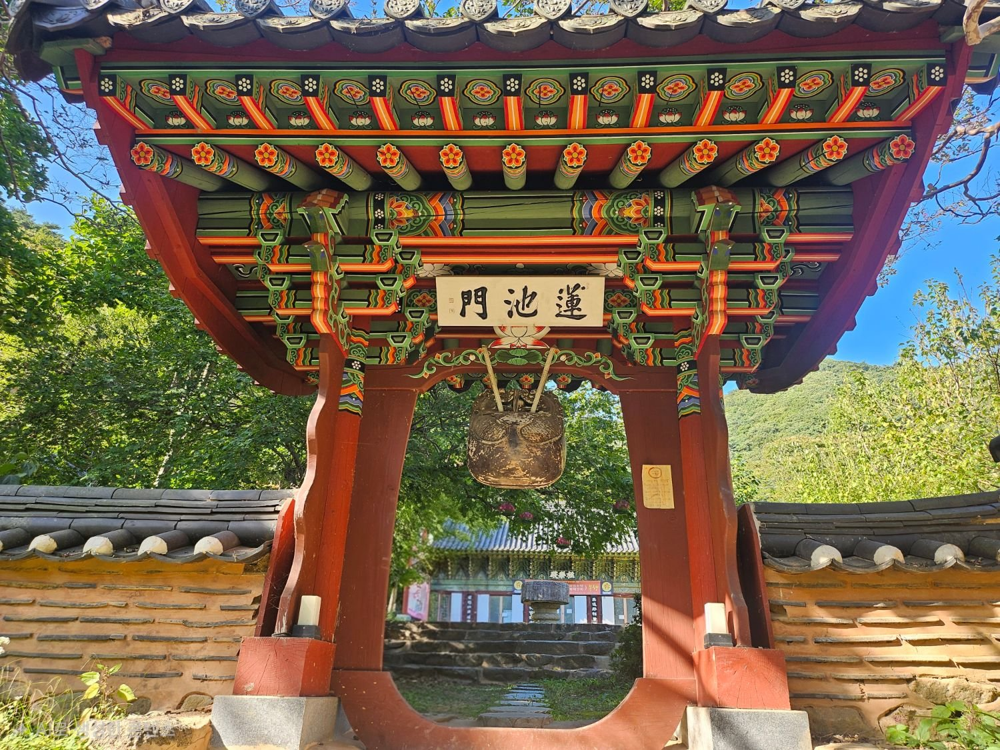
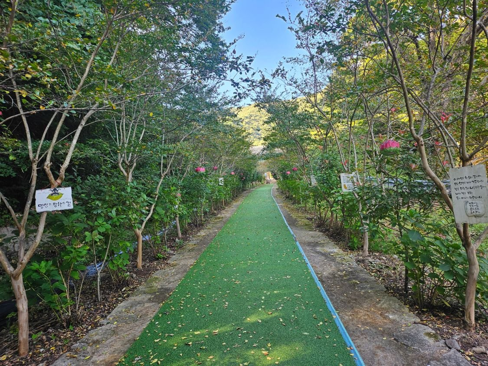
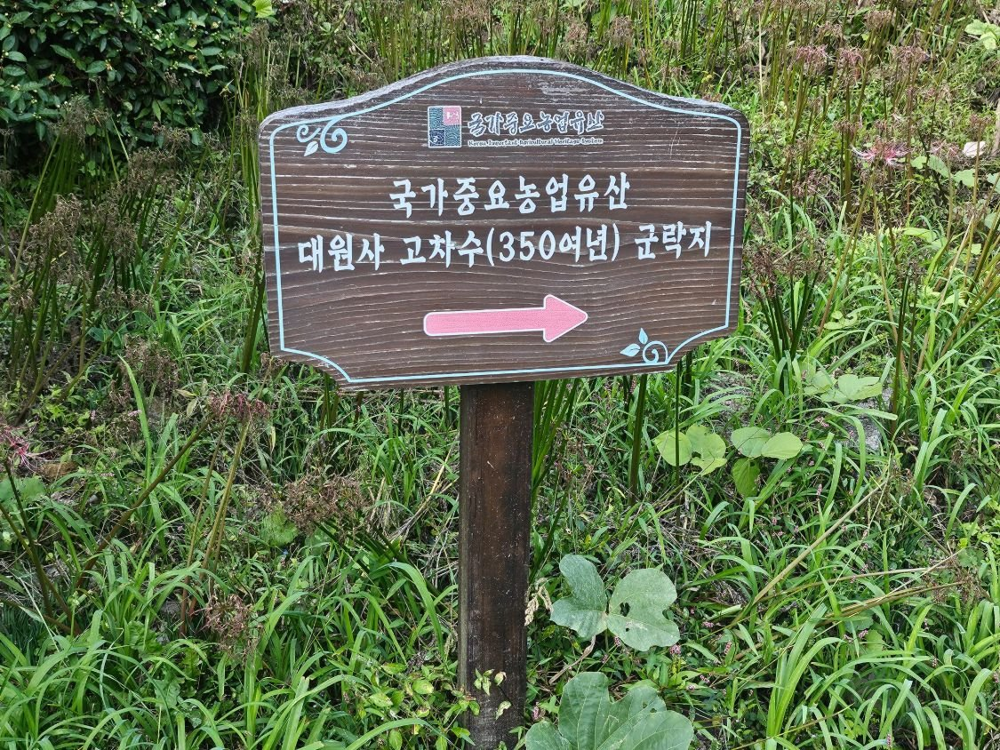


함께 둘러볼 곳
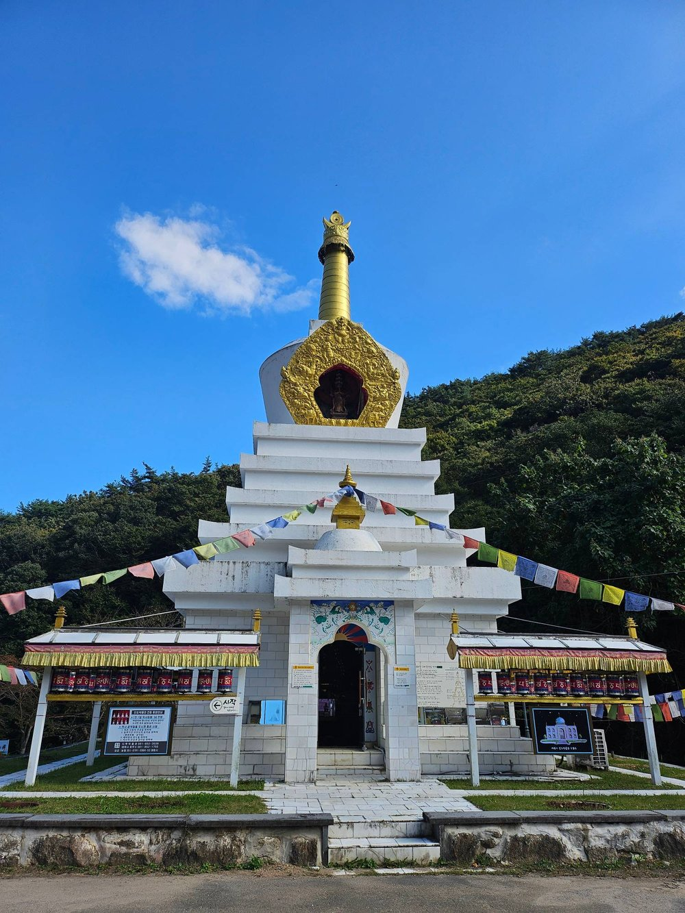
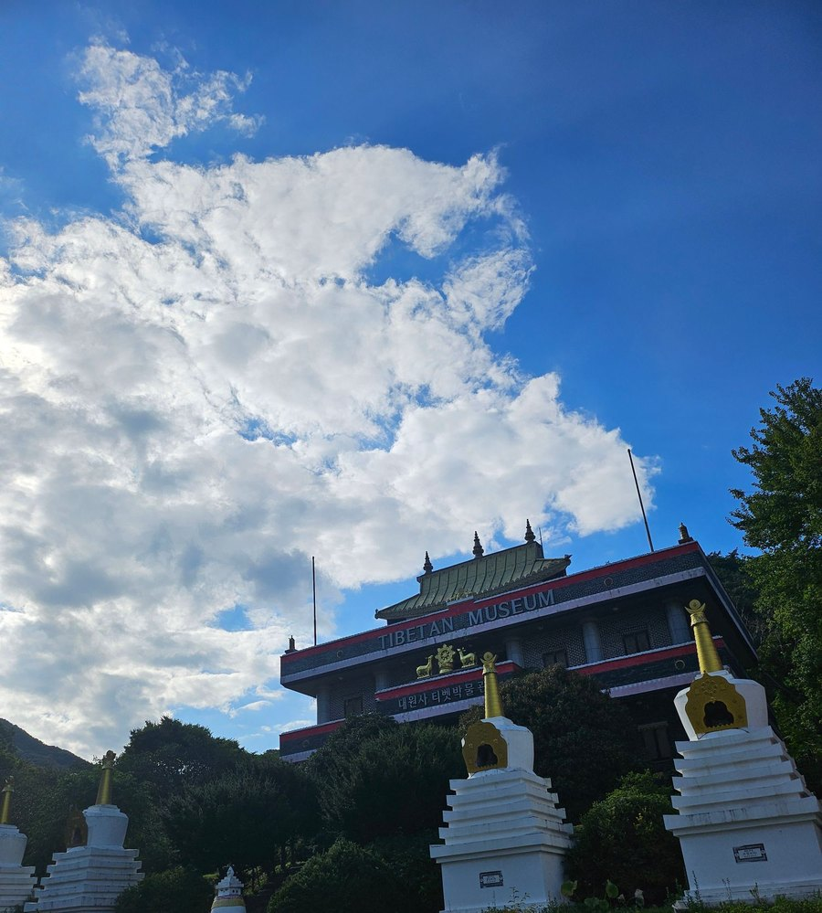
- 대원사 벚꽃길 5.5km1980년부터 가꾼 왕벚나무 길. ‘한국의 아름다운 길 100선’, 2004년 아름다운 숲 전국대회 입상. 봄에는 꽃 터널, 여름에는 걷기·자전거 길로 좋습니다.
- 티벳박물관과 백색 불탑대원사 입구, 티벳 미술품 1,000여 점 상설 전시. 관람 시간 하절기 10:00~18:00 · 동절기 10:00~17:00(가을·겨울 월요일 휴관). 관람료 일반 5,000원 · 학생 3,000원. 대원사와 별도 운영 · 문의 061-852-3038
- 연못과 수생식물경내 일곱 개의 연못에 연꽃·수련 등 30여 종의 수생식물이 자랍니다.
- 주암호대원사 들어오는 길목의 호수 풍경
출처: 대원사 홈페이지(daewonsa.or.kr) 연혁·문화재·참배안내 기준